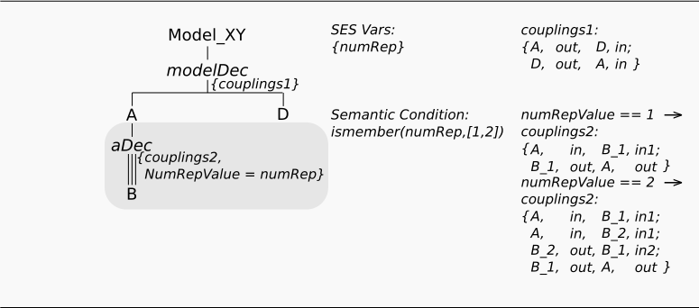
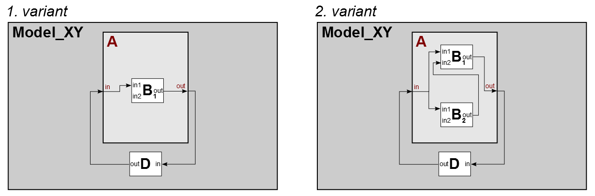

Variant Modelling Using a MultiAspect
(special kind of has-a relation)
Motivation
This example shows, how you can describe different model structures consisting of a varying number of replications of components from the same type in a single SES by using a MultiAspect. In the example, a model component A can be composed by a different number of replications of a model of type B. Here, the component A should be able to consist of one or two components of type B.
Basic SES:

In the SES specified model structures:

Entities
Variant 1 - The model consist of:
- atomic models (AM): B, D
- coupled models (CM): A
Variant 2 - The model consist of:
- atomic models (AM): 2xB, D
- coupled models (CM): A
Description
Adding a MultiAspect
Has-a relations with a number of entities from the same type can be described by a MultiAspect. However, currently the TOOLBOX LIMITS the usage of MultiAspects, that after a MultiAspect must follow an entity that is a leaf node. A MultiAspect is a special kind of Aspect. Beside the two Aspect properties Aspectrule (for siblings) and Couplings it has a third property, called Number Of Replications.
Number Of Replications
In order to define, how many replications should be used, you need to set the Number Of Replications. You can define it with a fixed integer value, an SES Variable or an SES Function. In the example, the SES Variable "numRep" is used to set the Number Of Replications.
SES Variables & Semantic Conditions
basic explanation see ex. 2
Couplings
Defining couplings at a MultiAspect is the same procedure as for Aspects with the exception, that you have to specify couplings for each possible variant of Number Of Replications. In the example defines 2 variants, with eighter one or two components of "B". Hence, you have to define for both cases the couplings separately. Use the popup to switch through the cases. The interval values allow you to set couplings for each replication number that lies in the open interval.
Aspectrule
The example did not defines an Aspectrule, because there are no Aspect Siblings.
REMARK
Notice, when prunig the SES the the names of the replicated "B" component(s) will be extended by numbers into B_1 (and B_2). This is caused by the Valid Brothers axiom, which says, that sibling nodes must not have equal names.